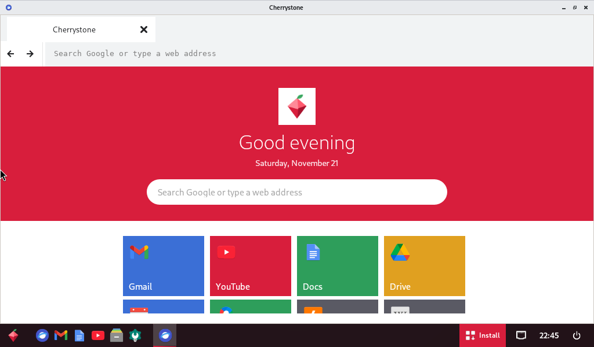
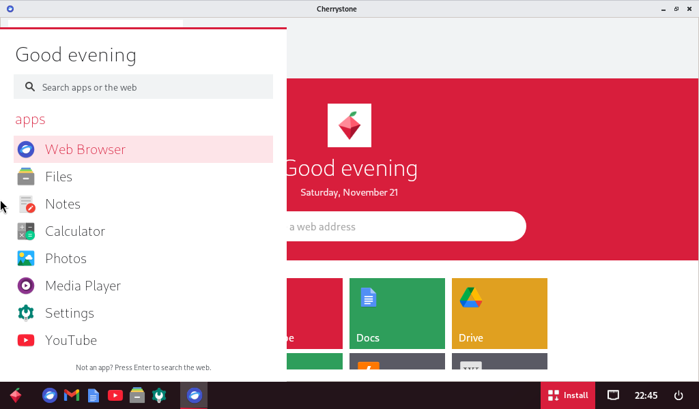
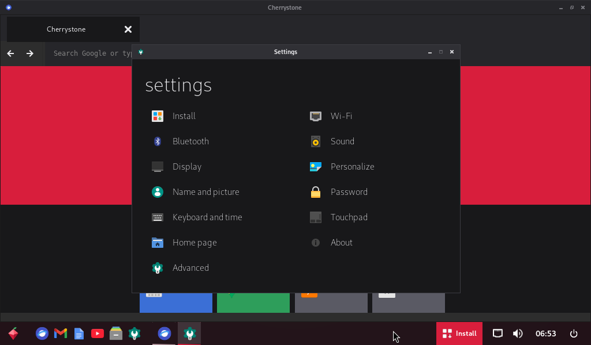
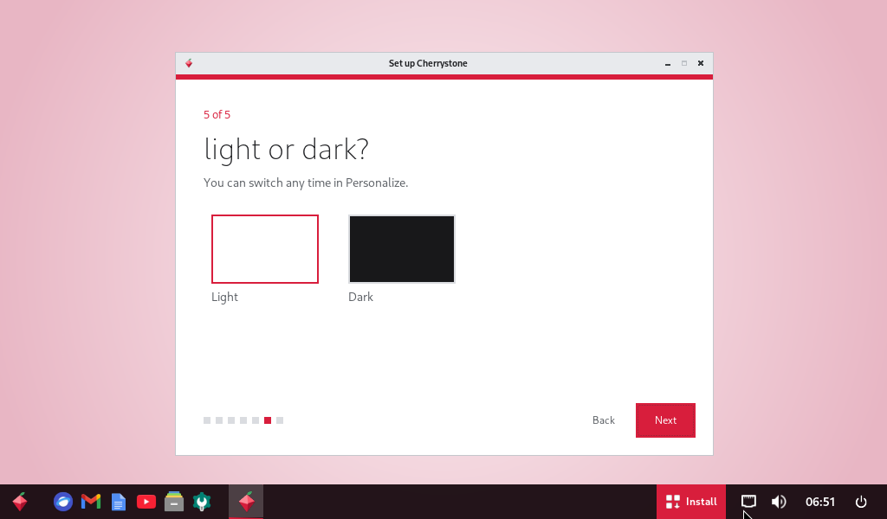

Cherrystone is a small, simple operating system built around a web browser. It runs from a USB stick and it's free.
Version 0.2 beta. 32-bit works on almost any PC (519 MB). 64-bit is for newer PCs (615 MB). All releases · Source code
This is a beta. Try it from the USB stick first, and don't install it on a computer you rely on yet.

Tested on an Acer Chromebook 14 that can barely run GNOME.
With Cherrystone, it's smooth as butter.

Launcher, dark mode
Settings, dark mode
Setup, the first time you start